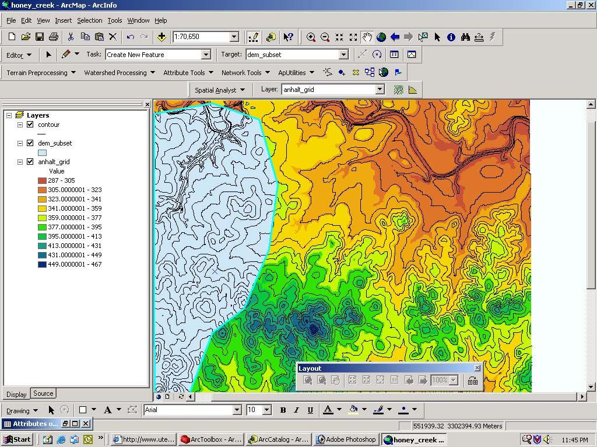
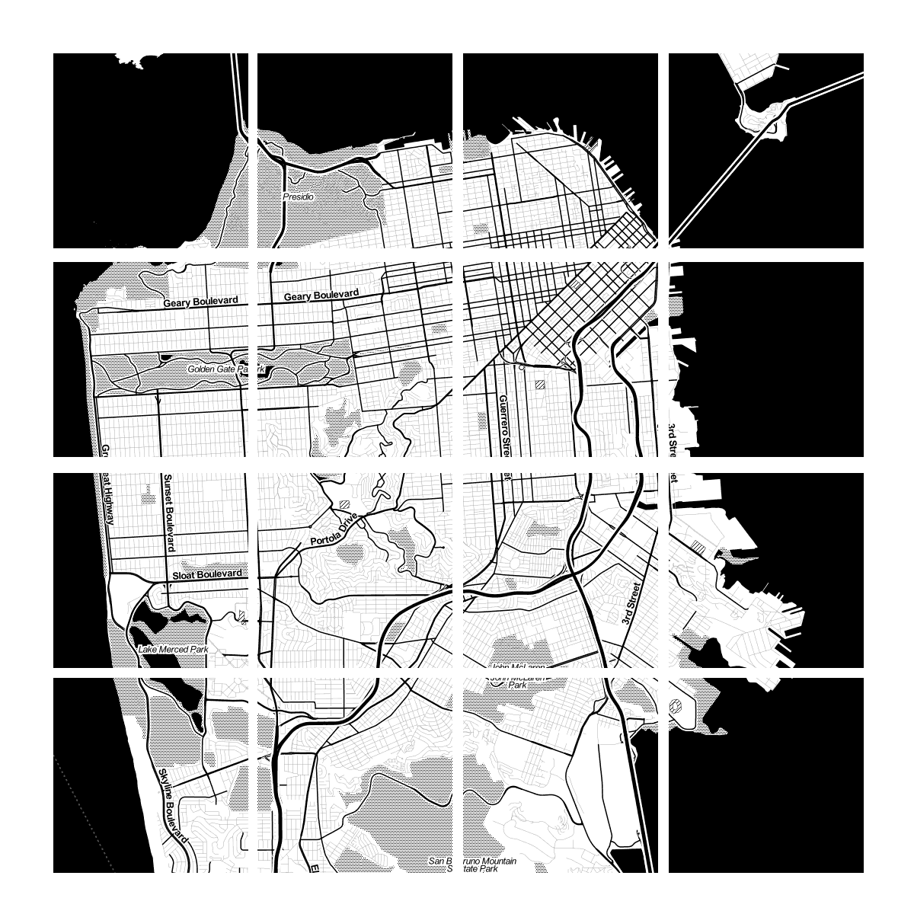

wifi: MakerSquare
pass: workhardplayhard
Web Mapping Fundamentals
Feel free to ask questions!
What's a Web Map?
It's a Map
But not on paper
And not in a desktop application
On the Internet, accessible via browser
like

Usually interactive
Comprised of
TILES

Tiles?
History Detour
(somewhat accurate)
>>>
First there were Desktop Maps like
esri's ArcView

(which was later replaced by ArcMap)


In 1996
MapQuest launched their web service
Directions! Online! Whoa!
But it was pretty slow, required full page reloads to scroll or zoom, and was aligned to specific boundaries

Smooth scrolling & zooming
What was the big change?
It was the
TILE
End of Detour
So what's so special about tiles?
An image for the entire world at multiple scales would be HUGE
Tiles are small 256x256-pixel images placed next to each other to look like one large image

All these little tiles load
way faster than one big map
Different zoom levels for different amounts of detail
Tiles are arranged in a grid for each zoom level

Zoom level 0:
one tile for the world
With each additional zoom level, the number of tiles increases exponentially.
Zoom level 1:
4 tiles for the world
Zoom level 2: 16 tiles
Zoom level 3: 64 tiles
Zoom level 13:
67,108,864 tiles
Map tiles are just images on the web, so you can link to them individually
In order to understand how this works, let's break down the URL
http://tile.openstreetmap.org/4/2/6.png -- this is the name of the tile server
http://tile.openstreetmap.org/4/2/6.png -- this is the z value, or the zoom level
http://tile.openstreetmap.org/4/2/6.png -- This is the x/y value, or the place in the grid where the tile lives
All tiles have the same boundaries
Mapping Libraries do the work of positioning the tiles for you and handling interactions
Web maps use the Mercator projection, which was designed for sailors BUT works well for flat maps
Projection Detour
The Earth is Round
A Map is Flat
A sphere's surface cannot be represented on a plane without distortion - Gauss
Mercator is conformal - preserves direction, but clobbers area

Constant direction as straight line
Because of how web maps are used, Mercator is a good choice of projection
Otherwise the angles of your streets would be all goofy
(Actually a special Google-developed type of Mercator called 'Web Mercator' is used)
End of Detour
So we have tiles which usually form a Base Layer
We can also have Vectors!
Points, lines, polygons
OH MY
Vectors are drawn on top of the tiles and add interaction
Wrapping up:
Tiles - images that make the map
Vectors - graphics on top of the map
Mapping Library - code that positions the tiles and draws the vectors
All in your Web Browser
Sweet!

Let's Make a Map!
Let's start writing that.
var ourMap = L.map('map');
var ourMap = L.map('map');
Create a Leaflet map.
var ourMap = L.map('map');
At the element with id="map".
var ourMap = L.map('map');
And store the map as a variable called ourMap.
var baseLayer = L.tileLayer(
'http://{s}.tile.openstreetmap.org/{z}/{x}/{y}.png'
);
var baseLayer = L.tileLayer(
'http://{s}.tile.openstreetmap.org/{z}/{x}/{y}.png'
);
Create a tile layer.
var baseLayer = L.tileLayer(
'http://{s}.tile.openstreetmap.org/{z}/{x}/{y}.png'
);
We'll use basic OpenStreetMap tiles. This string is a template for how Leaflet will ask for tiles from a server.
var baseLayer = L.tileLayer(
'http://{s}.tile.openstreetmap.org/{z}/{x}/{y}.png'
);
These are placeholders for the tile
z,
x, and
y coordinates we talked about a while ago. Leaflet will replace these with real values when you pan/zoom around.
var baseLayer = L.tileLayer(
'http://{s}.tile.openstreetmap.org/{z}/{x}/{y}.png'
);
This is another placeholder. It gets replaced with letters (a, b, c, d). This spreads the image requests across a few domains so the tiles can load faster.
var baseLayer = L.tileLayer(
'http://{s}.tile.openstreetmap.org/{z}/{x}/{y}.png'
);
Store this tile layer as a variable called baseLayer.
baseLayer.addTo(ourMap);
Take that
base layer and add it to our map.
baseLayer.addTo(ourMap);
Take that base layer and
add it to our map.
baseLayer.addTo(ourMap);
Take that base layer and add it to
our map.
ourMap.setView([30.3, -97.7], 10);
Take
our map and set the view area to be centered on Austin with zoom level 10.
ourMap.setView([30.3, -97.7], 10);
Take our map and
set the view area to be centered on Austin with zoom level 10.
ourMap.setView([30.3, -97.7], 10);
Take our map and set the view area to be
centered on Austin with zoom level 10.
ourMap.setView([30.3, -97.7], 10);
Latitude.
ourMap.setView([30.3, -97.7], 10);
Longitude.
ourMap.setView([30.3, -97.7], 10);
Take our map and set the view area to be centered on Austin with
zoom level 10.
Add points on the map?
var ourMarker = L.marker([30.27, -97.741]);
Create a
marker. That's what points on the map are called.
var ourMarker = L.marker([30.27, -97.741]);
Latitude.
var ourMarker = L.marker([30.27, -97.741]);
Longitude.
var ourMarker = L.marker([30.27, -97.741]);
Store it as a variable called
ourMarker
var ourMarker = L.marker([30.27, -97.741]);
ourMarker.addTo(ourMap);
Take our marker and add it to our map.
var ourMarker = L.marker([30.27, -97.741]);
ourMarker.addTo(ourMap);
Take our marker
and add it to our map.
var ourMarker = L.marker([30.27, -97.741]);
ourMarker.addTo(ourMap);
Take our marker and add it
to our map.
Popup text!
var ourMarker = L.marker([30.27, -97.741]);
ourMarker.addTo(ourMap);
ourMarker.bindPopup('#maptimeATX');
Take
our marker and bind some popup text to it.
var ourMarker = L.marker([30.27, -97.741]);
ourMarker.addTo(ourMap);
ourMarker.bindPopup('#maptimeATX');
Take our marker and
bind some popup text to it.
var ourMarker = L.marker([30.27, -97.741]);
ourMarker.addTo(ourMap);
ourMarker.bindPopup('#maptimeATX');
Take our marker and bind some
popup text to it.
All together now.
var ourMap = L.map('map');
var baseLayer = L.tileLayer(
'http://{s}.tile.openstreetmap.org/{z}/{x}/{y}.png'
);
baseLayer.addTo(ourMap);
ourMap.setView([30.3, -97.7], 10);
var ourMarker = L.marker([30.27, -97.741]);
ourMarker.addTo(ourMap);
ourMarker.bindPopup('#maptimeATX');
Add your own markers. Or whatever you want. Have fun.
Thanks!
 GoogleMaps
GoogleMaps Flat, not a digital globe like Google Earth
Flat, not a digital globe like Google Earth

 Image by Stefan Kuhn
Image by Stefan Kuhn


{kind=link}
{kind=link}